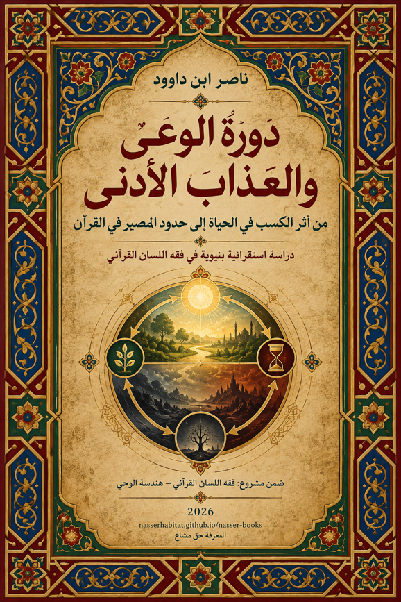

ناصر ابن داوود

نسخة نصية مستخرجة من ملف Word الذي قدمه المؤلف؛ راجع المصدر الأصلي.
جارٍ تجهيز القارئ…
دورة الوعي والعذاب الأدنى
من أثر الكسب في الحياة إلى حدود المصير في القرآن
دراسة استقرائية بنيوية في فقه اللسان القرآني
ضمن مشروع: فقه اللسان القرآني – هندسة الوحي
ناصر ابن داوود
2026
PUBLICATION READY — QC03 / VISUAL DIAGRAMS PASS
النسخة الأكاديمية النهائية المنقحة — مراجعة QC02
المقدمة العامة
من البحث عن الجواب إلى بناء القدرة على الحكم
لا ينطلق هذا الكتاب من الرغبة في تقديم صورة جديدة عن الموت والبرزخ والجنة والنار بقدر ما ينطلق من سؤال أسبق:
كيف يستطيع القارئ أن يبني حكمه من القرآن، وأن يعرف أين ينتهي النص، وأين يبدأ الاستنباط، وأين تتحول الفكرة إلى فرضية تحتاج إلى الاختبار؟
إن أخطر ما يصيب البحث في موضوعات المصير أن تتحول الرغبة في بناء صورة مكتملة إلى ملء الفراغات التي تركها النص مفتوحة.
فإذا ذكر القرآن التوفي، أُضيفت إليه تفاصيل لم يذكرها. وإذا ذكر البرزخ، شُيّدت فوق اللفظ عوالم كاملة. وإذا ذكر البعث، حُولت ألفاظ الإنشاء والتبديل والإخراج إلى آلية وجودية مكتملة قبل اختبار مواردها. وإذا ذكر العذاب الأدنى، سارعت القراءة إلى مساواة كل ألم دنيوي بجهنم. وإذا ظهرت الحياة الطيبة، جرى أحيانًا رفعها إلى منزلة الجنة نفسها.
وهكذا تنتقل القراءة، من غير أن تشعر، من: النص، إلى: التفسير، ثم إلى: النموذج، ثم تعرض النموذج في النهاية كأنه هو النص نفسه.
هذا الكتاب يعمل في الاتجاه المعاكس.
إنه يحاول تفكيك هذه الطبقات، ثم إعادتها إلى مراتبها الصحيحة.
فالنص نص. والملاحظة ملاحظة. والاستقراء استقراء. والعلاقة المستنبطة علاقة تحتاج إلى الاختبار. والفرضية لا تصبح قانونًا لمجرد جمالها أو قدرتها على تفسير بعض الموارد. والنموذج لا يصبح حقيقةً وجوديةً لمجرد أنه يربط عناصر متفرقة في صورة واحدة متماسكة.
ومن هنا يتأسس المسار الحاكم لهذا الكتاب:
النص ← الملاحظة ← الاستقراء ← العلاقات ← الفرضية ← الاختبار ← القانون ← النموذج
ولا يجوز اختصار الطريق.
لماذا «دورة الوعي والعذاب الأدنى»؟
نشأت فكرة هذا الكتاب من ملاحظة شبكة واسعة من الموارد القرآنية التي تربط بين: الكسب، والابتلاء، والهداية، والإعراض، والحياة الطيبة، والمعيشة الضنك، والعذاب الأدنى، والتوفي، والموت، والبرزخ، والبعث، والجزاء.
وقد أغرت هذه الشبكة، في المراحل الأولى من البحث، ببناء نموذج كلي سريع: الإنسان يدخل الدنيا في دورة ابتلاء، ثم ينتقل عبر الموت والبرزخ، وقد يُعاد إلى طور جديد من الاختبار إذا لم تستكمل النفس تزكيتها، حتى تبلغ رتبة تؤهلها للمصير النهائي.
كان هذا النموذج قادرًا على جمع موارد كثيرة في صورة واحدة. لكن قدرة النموذج على الجمع لا تساوي ثبوته.
ومع اتساع الاستقراء، وظهور الموارد المقاومة، وإعادة اختبار الموت والتوفي والبرزخ والرجوع والبعث، أصبح من الضروري إعادة فتح البناء كله.
وهنا حدث التحول الحقيقي في هذا الكتاب: لم يعد السؤال: كيف نثبت دورة الإعادة؟ بل أصبح: ما الذي يثبته القرآن فعلًا عن مسار الإنسان، وما الذي يسمح به بوصفه فرضية، وما الذي يقاومه النص؟
هذا التحول ليس تراجعًا عن البحث. بل هو ارتقاء في صرامته.
فنجاح البحث لا يقاس بعدد القوانين التي ينتجها، بل بقدرته على منع نفسه من إعلان قانون لا يحتمله الدليل.
من «الدورة» إلى «الشبكة»
يحمل عنوان الكتاب لفظ «الدورة»، لكن استعماله في هذه الدراسة يحتاج إلى ضبط.
الدورة لا تعني ابتداءً: عودة النفس مرارًا إلى أجساد دنيوية جديدة. ولا تعني: تناسخ الأرواح. ولا تعني: أن الموت بوابة آلية إلى حياة أرضية أخرى.
بل يستعمل مفهوم الدورة، في مرحلته الأولى، لوصف بنية أوسع يمكن ملاحظتها في حياة الإنسان:
إدراك → اختيار → كسب → أثر → مراجعة أو استمرار → مآل
فالإنسان يتحرك داخل دوائر من الفعل والأثر والتصحيح.
﴿وَلَنُذِيقَنَّهُم مِّنَ الْعَذَابِ الْأَدْنَىٰ دُونَ الْعَذَابِ الْأَكْبَرِ لَعَلَّهُمْ يَرْجِعُونَ﴾ — السجدة:21
وهذا المورد يفتح سؤالًا كبيرًا: هل العذاب الأدنى مجرد عقوبة؟ أم يحمل وظيفة إنذارية وتصحيحية؟ وما معنى «لعلهم يرجعون»؟ رجوع إلى ماذا؟ وهل كل ألم في الدنيا عذاب أدنى؟ وهل العلاقة بين الإعراض والضنك علاقة مطردة يمكن تحويلها إلى قانون سببي؟
هذه الأسئلة لا ينبغي حسمها من الآية منفردة. بل تصبح مدخلًا لبناء Corpus أوسع واختبار شبكة كاملة من الموارد.
الدنيا ليست جهنم
من أهم التصحيحات التي انتهت إليها المراجعة المتأخرة لهذا المشروع ضرورة الفصل بين ثلاثة مستويات: مجال الابتلاء، أثر الكسب، تمام الجزاء.